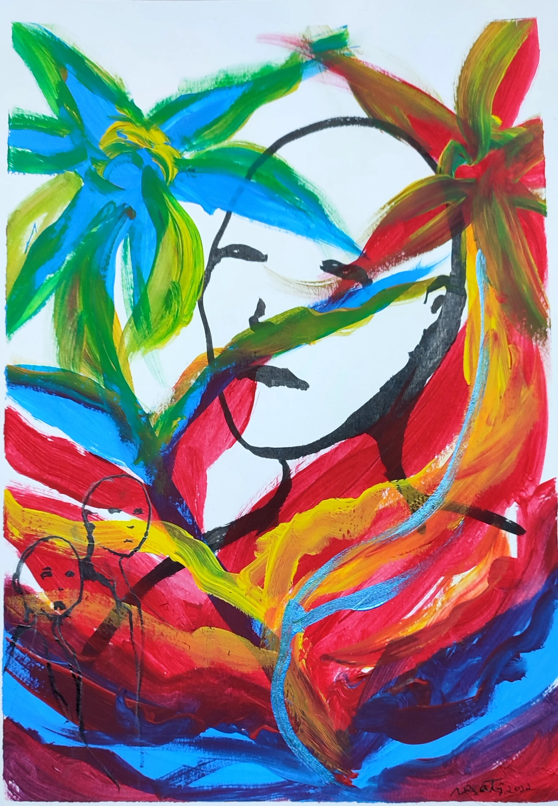

Opere
La ricerca pittorica di Pierangelo Rosati si muove tra il corpo umano e le immagini di un mondo altro. Non categorie separate, ma due direzioni di uno stesso interrogativo: ciò che affiora in superficie e ciò che, più in profondità, continua a premerle contro.

La figura umana
Volti e corpi diventano luoghi di trasformazione, attraversati da tensioni psichiche e simboliche. La figura non è soltanto ciò che appare, ma una soglia tra il singolare e l'universale.
Entra nella galleria →
Visioni
Paesaggi interiori, presenze inattese e forme che sembrano appartenere a un tempo remoto. Un immaginario in cui la natura diventa memoria, enigma e possibilità di un nuovo inizio.
Entra nella galleria →